Research Projects
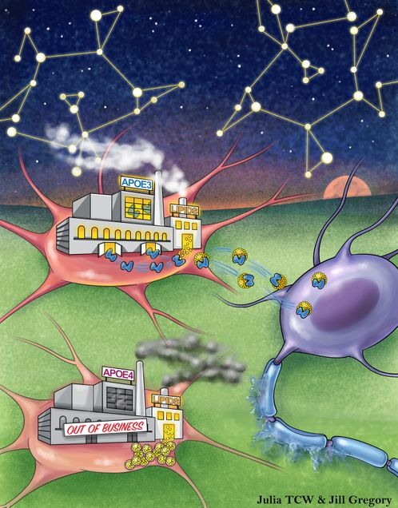
Cholesterol and matrisome pathways dysregulated in astrocytes and microglia
The impact of Apolipoprotein E ε4 (APOE4), the strongest genetic risk factor for Alzheimer’s disease (AD), on human brain cellular function remains unclear. Here we investigated the effects of APOE4 on brain cell types derived from population and isogenic human induced pluripotent stem cells (hiPSCs), post-mortem brain and APOE targeted replacement (APOE-TR) mice. Population and isogenic models demonstrate that APOE4 local haplotype rather than a single risk allele contributes to risk. Global transcriptomic analyses reveal human specific, APOE4-driven lipid metabolic dysregulation in astrocytes and microglia. APOE4 enhances de novo cholesterol synthesis despite elevated intracellular cholesterol due to lysosomal cholesterol sequestration in astrocytes. Further, matrisome dysregulation is associated with upregulated chemotaxis, glial activation and lipid biosynthesis in astrocytes co-cultured with neurons that recapitulates altered astrocyte matrisome signaling in human brain. Thus, APOE4 initiates glia-specific cell and non-cell autonomous dysregulation that may contribute to increased AD risk.
Human iPSC-Based Modeling of Central Nerve System Disorders for Drug Discovery
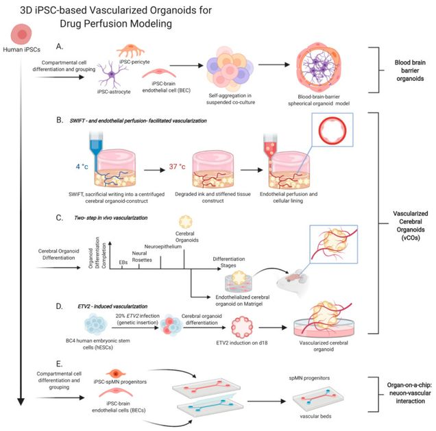
A high-throughput drug screen identifies potentially promising therapeutics for clinical trials. However, limitations that persist in current disease modeling with limited physiological relevancy of human patients skew drug responses, hamper translation of clinical efficacy, and contribute to high clinical attritions. The emergence of induced pluripotent stem cell (iPSC) technology revolutionizes the paradigm of drug discovery. In particular, iPSC-based three-dimensional (3D) tissue engineering that appears as a promising vehicle of in vitro disease modeling provides more sophisticated tissue architectures and micro-environmental cues than a traditional two-dimensional (2D) culture. Here we discuss 3D based organoids/spheroids that construct the advanced modeling with evolved structural complexity, which propels drug discovery by exhibiting more human specific and diverse pathologies that are not perceived in 2D or animal models. We will then focus on various central nerve system (CNS) disease modeling using human iPSCs, leading to uncovering disease pathogenesis that guides the development of therapeutic strategies. Finally, we will address new opportunities of iPSC-assisted drug discovery with multi-disciplinary approaches from bioengineering to Omics technology. Despite technological challenges, iPSC-derived cytoarchitectures through interactions of diverse cell types mimic patients’ CNS and serve as a platform for therapeutic development and personalized precision medicine.
Large-scale human brains genomics analyzing to better understand the role of genetics and epigenetics factors in Alzheimer’s disease
The lab has a computational biology branch aiming to better characterize effect of genetics and epigenetics factors in Alzheimer’s disease (AD) molecular phenotypes. Taking part of a multi-lab collaboration, we are collecting large scale multi omics human brain data from research programs to perform integrative genomics analysis using computational and machine learning tools. More specifically, we are responsible in our lab of the discovery of genetics and epigenetics interactions in human AD brain using whole genome sequencing and DNA methylation array data. Once genome-wide and brain region-specific change in methylation have been linked to AD risk, we can then identify molecular pathways epigenetically regulated in AD and highlight putative key pathological mechanisms and therapeutic targets to further study using our iPSC-based models.
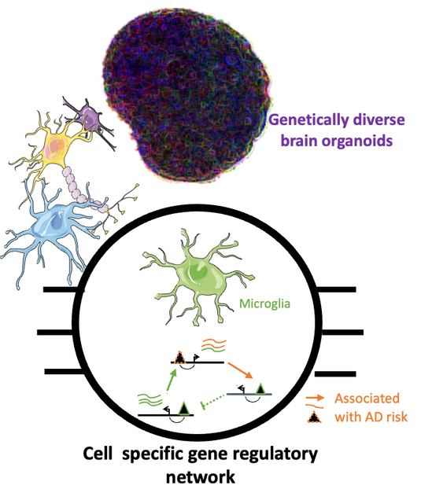
Population-wide cell-based multi-omics analysis to find individuals and cells specific molecular drivers of neurological diseases
Both wet and dry lab members gather their effort to leverage Brain organoids and single cell multi-omics analysis to characterize the cell-specific regulatory program associated with AD phenotype risk. From iPSCs derived from donors with diverse genetics background and differentiated in AD relevant brain organoid model, we analyzed the transcriptome and chromatin accessibility across each single cell using droplet-based microfluidics. In addition to highlight the different gene regulatory network and cell signaling in brain cell types, the integration of these single cell multiomics data with the genetics background of the cells will help us identify the cell specific molecular pathways driving risk of neurological disorders.
Research Images
Representative research images provided by Dr. TCW for the independent lab website.
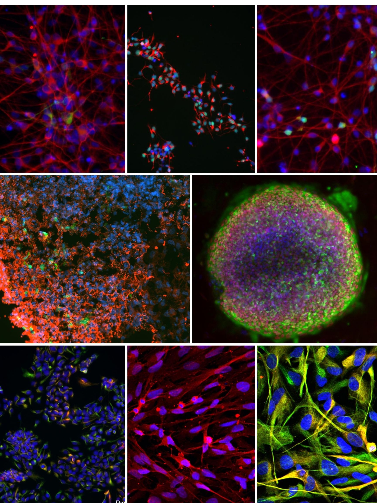
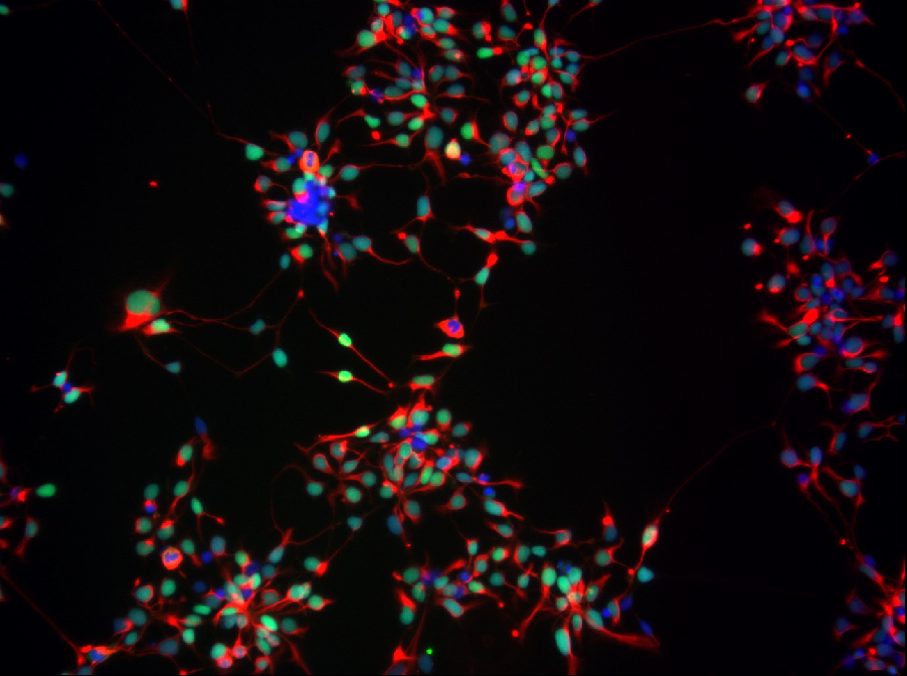
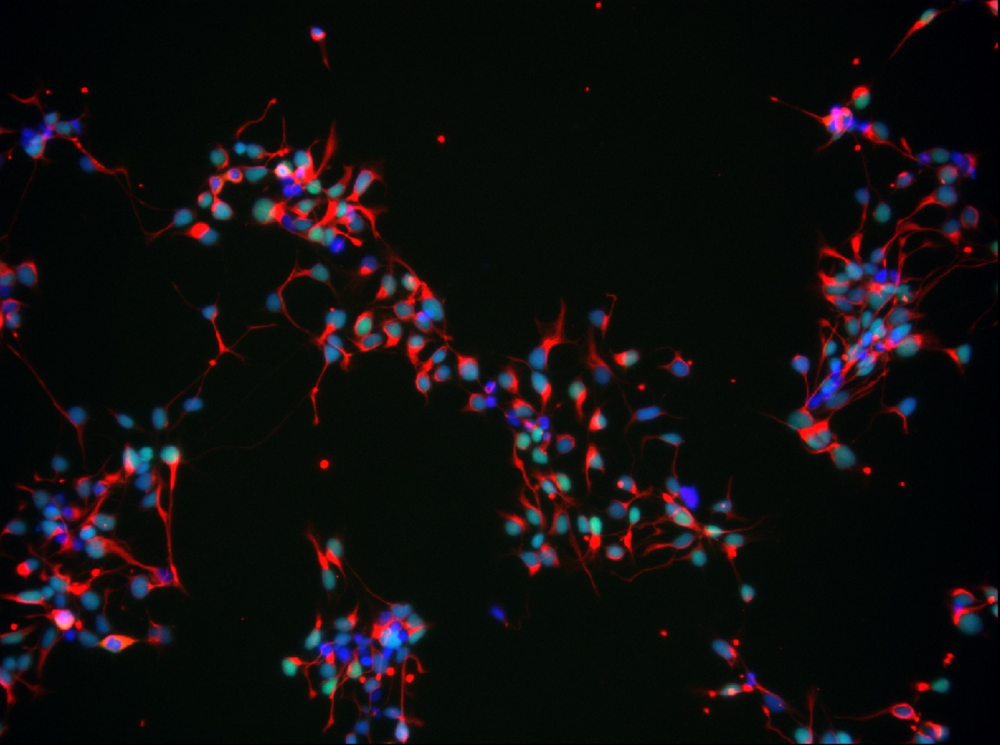
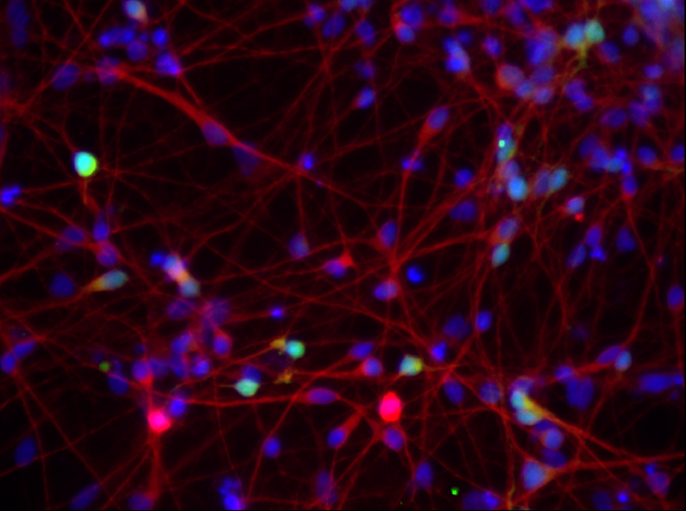
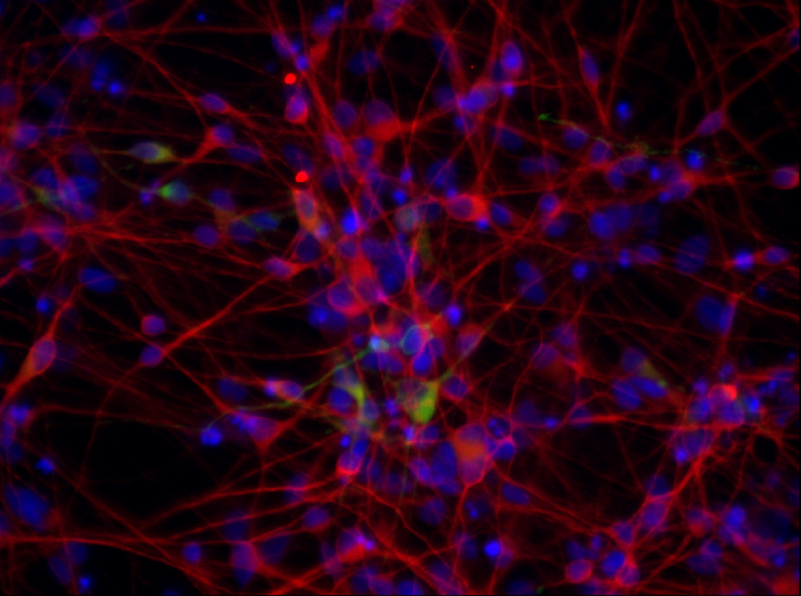
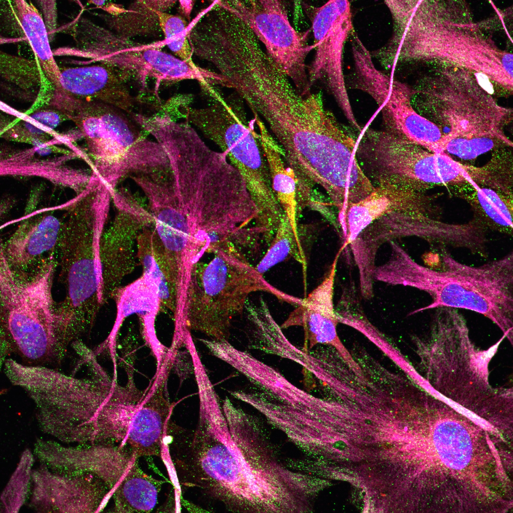
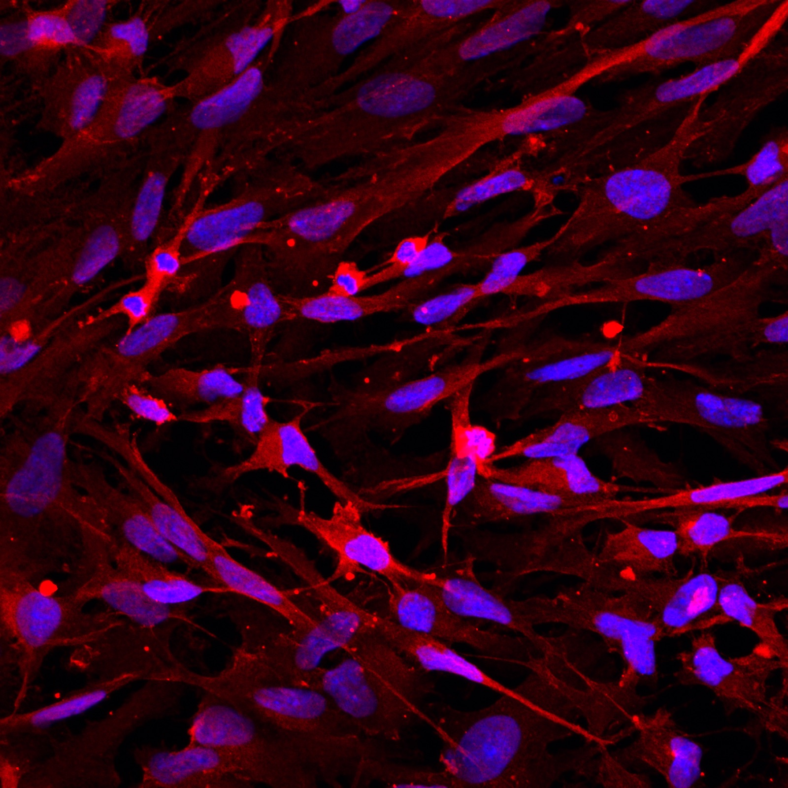
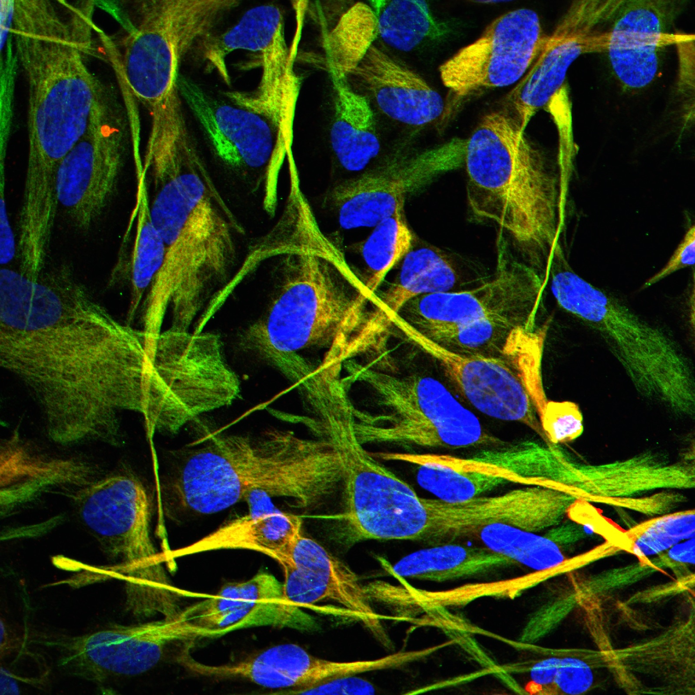
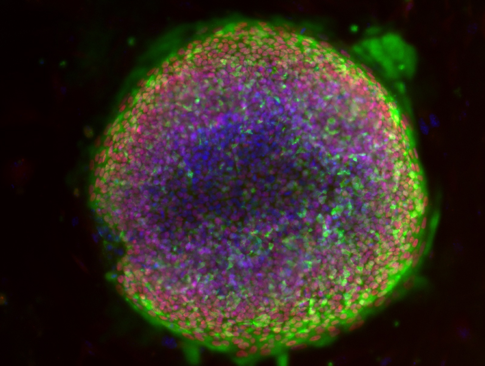
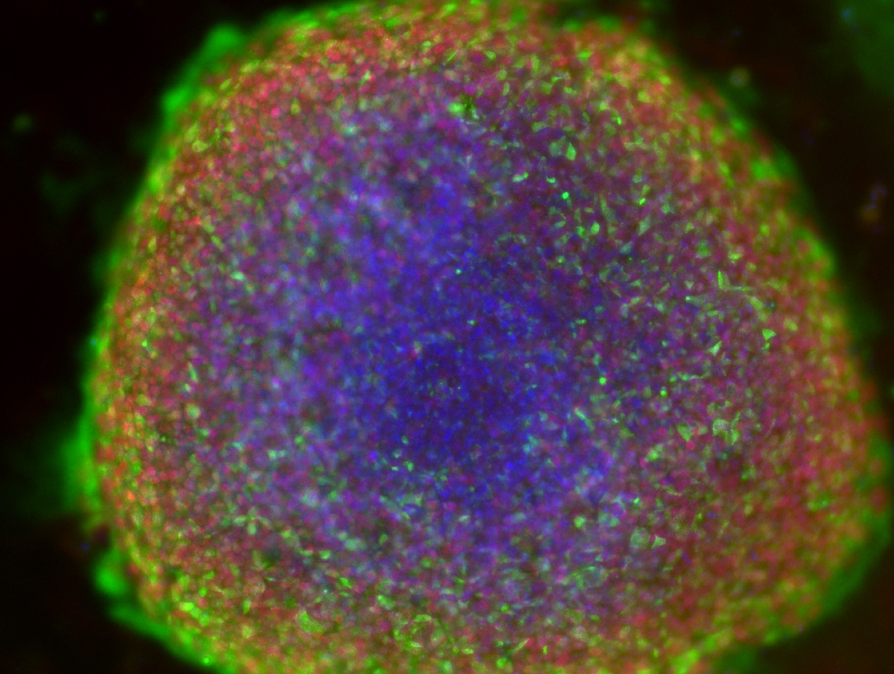
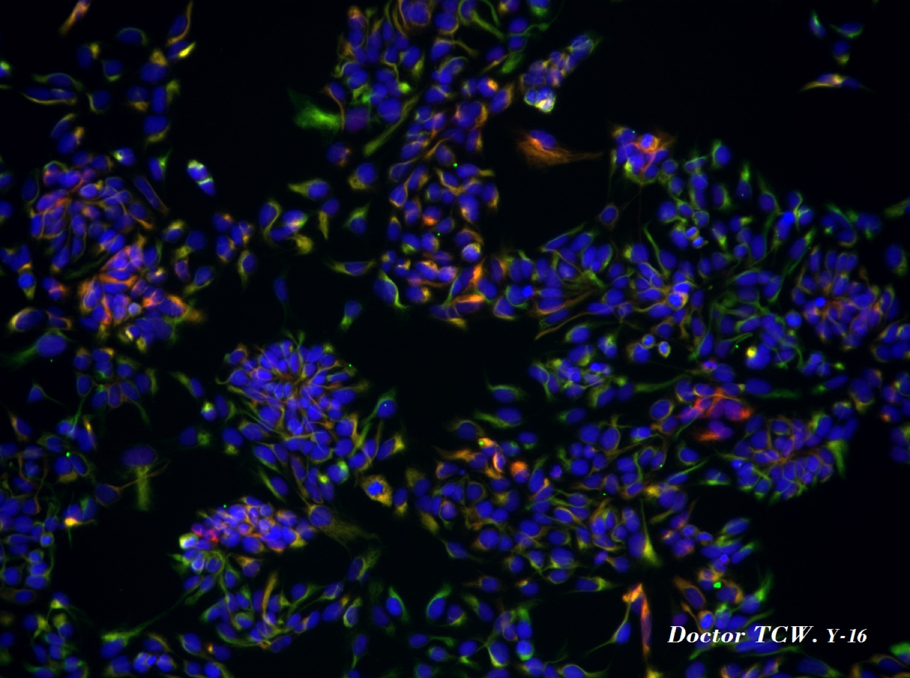
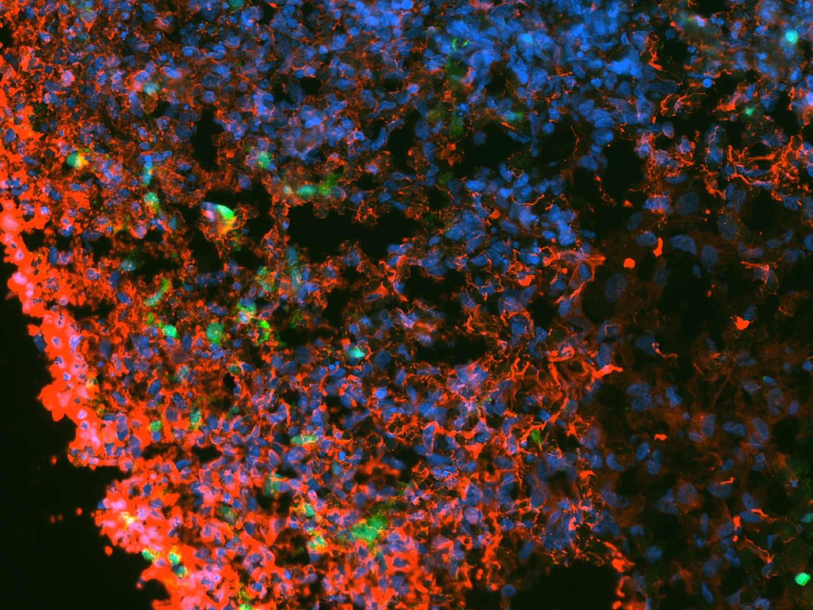